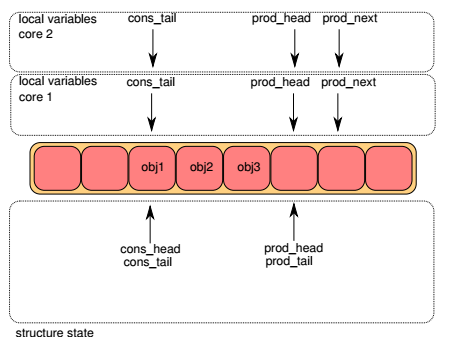
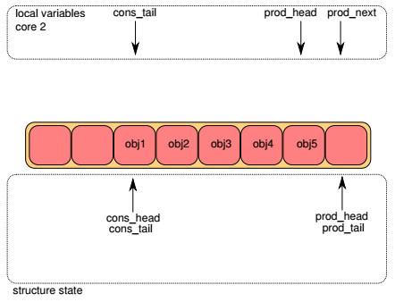

2. Ring¶
2.1. 概述¶
rte_ring(以下简称ring)是一个高效率的无锁环形队列，它具有以下特点：
- FIFO
- 队列长度是固定的，所有指针存放在数组中
- 无锁实现(lockless)
- 多消费者或单消费者出队
- 多生产者或单消费者入队
- 批量(bulk)出队 - 出队N个对象，否则失败
- 批量(bulk)入队 - 入队N个对象，否则失败
- 突发(burst)出队 - 尽可能地出队N个对象
- 突发(burst)入队 - 尽可能地入队N个对象
与链表实现的队列相比，ring有以下优点：
- 更快 - 仅需要一次CAS(Compare-And-Swap)操作
- 比完全无锁的队列实现更简单
- 适配批量操作 - 由于指针存放在数组中，相比链表式队列多个对象的操作没有太大的cache miss
当然，ring也有缺点：
- 队列长度固定
- 比链表式队列更消耗内存(因为创建的时候队列长度便固定了)
ring的实现借鉴了 [freebsd_ring] 和 [linux_ringbuffer] 。
2.2. 应用场景¶
- DPDK应用程序之间的通信
- DPDK mempool
2.3. 无锁队列操作图解¶
下面将以多生产者(multi-producer, mp)的情形来说明ring入队时的操作，多消费者出队的基本原理可以此类比。
每个ring都有两对head，tail指针，一对用于生产者(入队)，另一对用于消费者(出队)。在下面各图中，上半部分表示lcore入队函数的局部变量， 下半部分表示ring的成员变量。objX表示队列中的对象。
2.3.1. Step1¶
一开始，lcore1和lcore2局部变量pro_head和cons_tail都和queue成员一致，局部变量prod_next都指向队列插入位置，即prod_head的前面。
2.3.2. Step2¶
接下来两个lcore通过CAS指令进行竞争，更新ring->prod_head改为胜者lcore的prod_next：
- 如果ring->prod_head != prod_head, CAS失败，返回Step1
- 否则，CAS成功，ring->prod_head = prod_next
下图中，lcore1竞争获胜，而lcore2需要重新进行Step1：


2.3.4. Step4¶
两个lcore进行竞争，更新ring->prod_tail：
- 如果ring->prod_tail != prod_head，CAS失败，继续尝试
- 否则，CAS成功, ring->prod_tail = prod_next
下图中，lcore1竞争获胜，lcore1上的入队操作到此结束。

2.3.5. Step5¶
lcore2如Step4一样，更新ring->prod_tail。至此lcore2的入队操作也已完成。
2.4. 数据结构¶
struct rte_ring {
char name[RTE_RING_NAMESIZE]; /**< Name of the ring. */
int flags; /**< Flags supplied at creation. */
const struct rte_memzone *memzone;
/**< Memzone, if any, containing the rte_ring */
struct prod {
uint32_t watermark; /**< Maximum items before EDQUOT. */
uint32_t sp_enqueue; /**< True, if single producer. */
uint32_t size; /**< Size of ring. */
uint32_t mask; /**< Mask (size-1) of ring. */
volatile uint32_t head; /**< Producer head. */
volatile uint32_t tail; /**< Producer tail. */
} prod __rte_cache_aligned;
struct cons {
uint32_t sc_dequeue; /**< True, if single consumer. */
uint32_t size; /**< Size of the ring. */
uint32_t mask; /**< Mask (size-1) of ring. */
volatile uint32_t head; /**< Consumer head. */
volatile uint32_t tail; /**< Consumer tail. */
#ifdef RTE_RING_SPLIT_PROD_CONS
} cons __rte_cache_aligned;
#else
} cons;
#endif
#ifdef RTE_LIBRTE_RING_DEBUG
struct rte_ring_debug_stats stats[RTE_MAX_LCORE];
#endif
void * ring[0] __rte_cache_aligned; /**< Memory space of ring starts here.
* not volatile so need to be careful
* about compiler re-ordering */
};
2.5. 多生产者入队¶
第34-36行处理多个producer的竞争，没有竞争到写入位置的线程将继续循环。第39行插入了一个rte_smp_wmb()调用，对这个函数DPDK文档的解释是：
Write memory barrier between lcores. Guarantees that the STORE operations that precede the rte_smp_wmb() call are globally visible across the lcores before the the STORE operations that follows it.
第49行的循环用于无锁同步对prod.tail的修改。
1 2 3 4 5 6 7 8 9 10 11 12 13 14 15 16 17 18 19 20 21 22 23 24 25 26 27 28 29 30 31 32 33 34 35 36 37 38 39 40 41 42 43 44 45 46 47 48 49 50 51 52 53 54 55 56 57 58 59 60 | static inline int __attribute__((always_inline))
__rte_ring_mp_do_enqueue(struct rte_ring *r, void * const *obj_table,
unsigned n, enum rte_ring_queue_behavior behavior)
{
uint32_t prod_head, prod_next;
uint32_t cons_tail, free_entries;
const unsigned max = n;
int success;
unsigned i, rep = 0;
uint32_t mask = r->prod.mask;
int ret;
do {
n = max;
prod_head = r->prod.head;
cons_tail = r->cons.tail;
free_entries = (mask + cons_tail - prod_head);
if (unlikely(n > free_entries)) {
if (behavior == RTE_RING_QUEUE_FIXED) {
return -ENOBUFS;
}
else {
if (unlikely(free_entries == 0)) {
return 0;
}
n = free_entries;
}
}
prod_next = prod_head + n;
success = rte_atomic32_cmpset(&r->prod.head, prod_head,
prod_next);
} while (unlikely(success == 0));
ENQUEUE_PTRS();
rte_smp_wmb();
if (unlikely(((mask + 1) - free_entries + n) > r->prod.watermark)) {
ret = (behavior == RTE_RING_QUEUE_FIXED) ? -EDQUOT :
(int)(n | RTE_RING_QUOT_EXCEED);
}
else {
ret = (behavior == RTE_RING_QUEUE_FIXED) ? 0 : n;
}
while (unlikely(r->prod.tail != prod_head)) {
rte_pause();
if (RTE_RING_PAUSE_REP_COUNT &&
++rep == RTE_RING_PAUSE_REP_COUNT) {
rep = 0;
sched_yield();
}
}
r->prod.tail = prod_next;
return ret;
}
|
ENQUEUE_PTRS:
第5行，如果n>4，则把它分成数次写入，每次写入4个指针；不足4的余数在switch语句中写入。
1 2 3 4 5 6 7 8 9 10 11 12 13 14 15 16 17 18 19 20 21 22 | #define ENQUEUE_PTRS() do { \
const uint32_t size = r->prod.size; \
uint32_t idx = prod_head & mask; \
if (likely(idx + n < size)) { \
for (i = 0; i < (n & ((~(unsigned)0x3))); i+=4, idx+=4) { \
r->ring[idx] = obj_table[i]; \
r->ring[idx+1] = obj_table[i+1]; \
r->ring[idx+2] = obj_table[i+2]; \
r->ring[idx+3] = obj_table[i+3]; \
} \
switch (n & 0x3) { \
case 3: r->ring[idx++] = obj_table[i++]; \
case 2: r->ring[idx++] = obj_table[i++]; \
case 1: r->ring[idx++] = obj_table[i++]; \
} \
} else { \
for (i = 0; idx < size; i++, idx++)\
r->ring[idx] = obj_table[i]; \
for (idx = 0; i < n; i++, idx++) \
r->ring[idx] = obj_table[i]; \
} \
} while(0)
|
2.6. 多消费者出队¶
1 2 3 4 5 6 7 8 9 10 11 12 13 14 15 16 17 18 19 20 21 22 23 24 25 26 27 28 29 30 31 32 33 34 35 36 37 38 39 40 41 42 43 44 45 46 47 48 49 50 51 52 | static inline int __attribute__((always_inline))
__rte_ring_mc_do_dequeue(struct rte_ring *r, void **obj_table,
unsigned n, enum rte_ring_queue_behavior behavior)
{
uint32_t cons_head, prod_tail;
uint32_t cons_next, entries;
const unsigned max = n;
int success;
unsigned i, rep = 0;
uint32_t mask = r->prod.mask;
do {
n = max;
cons_head = r->cons.head;
prod_tail = r->prod.tail;
entries = (prod_tail - cons_head);
if (n > entries) {
if (behavior == RTE_RING_QUEUE_FIXED) {
return -ENOENT;
}
else {
if (unlikely(entries == 0)){
return 0;
}
n = entries;
}
}
cons_next = cons_head + n;
success = rte_atomic32_cmpset(&r->cons.head, cons_head,
cons_next);
} while (unlikely(success == 0));
DEQUEUE_PTRS();
rte_smp_rmb();
while (unlikely(r->cons.tail != cons_head)) {
rte_pause();
if (RTE_RING_PAUSE_REP_COUNT &&
++rep == RTE_RING_PAUSE_REP_COUNT) {
rep = 0;
sched_yield();
}
}
r->cons.tail = cons_next;
return behavior == RTE_RING_QUEUE_FIXED ? 0 : n;
}
|
1 2 3 4 5 6 7 8 9 10 11 12 13 14 15 16 17 18 19 20 21 22 | #define DEQUEUE_PTRS() do { \
uint32_t idx = cons_head & mask; \
const uint32_t size = r->cons.size; \
if (likely(idx + n < size)) { \
for (i = 0; i < (n & (~(unsigned)0x3)); i+=4, idx+=4) {\
obj_table[i] = r->ring[idx]; \
obj_table[i+1] = r->ring[idx+1]; \
obj_table[i+2] = r->ring[idx+2]; \
obj_table[i+3] = r->ring[idx+3]; \
} \
switch (n & 0x3) { \
case 3: obj_table[i++] = r->ring[idx++]; \
case 2: obj_table[i++] = r->ring[idx++]; \
case 1: obj_table[i++] = r->ring[idx++]; \
} \
} else { \
for (i = 0; idx < size; i++, idx++) \
obj_table[i] = r->ring[idx]; \
for (idx = 0; i < n; i++, idx++) \
obj_table[i] = r->ring[idx]; \
} \
} while (0)
|
2.7. 索引计算¶
ring中的生产者和消费者指针(prod.head, prod.tail, cons.head, cons.tail)是用32位无符号整数来表示的，而ring存放对象指针的数组的大小是远小于UINT32_MAX的，计算存取对象的数组索引需要有一定技巧；另外，由于ring是一个环形buffer，这些指针值溢出后会发生回绕，计算ring中已用和空闲对象的数目也需要注意方法。
求索引 ENQUEUE_PTRS和DEQUEUE_PTRS中:
uint32_t idx = prod_head & mask; 其中，mask = size-1
求已有项数
static inline unsigned
rte_ring_count(const struct rte_ring *r)
{
uint32_t prod_tail = r->prod.tail;
uint32_t cons_tail = r->cons.tail;
return ((prod_tail - cons_tail) & r->prod.mask);
}
或
entries = (prod_tail - cons_head);
- 求空闲项数
static inline unsigned
rte_ring_free_count(const struct rte_ring *r)
{
uint32_t prod_tail = r->prod.tail;
uint32_t cons_tail = r->cons.tail;
return ((cons_tail - prod_tail - 1) & r->prod.mask);
}
或
free_entries = (mask + cons_tail - prod_head);
注解
这些算法要求ring的大小必须是2的N次方
以下举例说明。令p为生产者指针值，c为消费者指针值，size=16为ring大小，取mask=(size-1)=15为掩码，idx_p和idx_c为p和c对应的ring索引，used为已用对象数，free为空闲对象数。
初始化时，这4个指针值都为0
p=14, c=3时:
idx_p = p & mask = 14 idx_c = c & mask = 3 used = p - c = 11 free = (mask + c - p) = (15 + 3 - 14) = 4
p=20, c=9时:
idx_p = p & mask = 4 idx_c = c & mask = 9 used = p - c = 20 - 9 = 11 free = (mask + c - p) = (15 + 9 - 20) = 4
注解
注意最后一个free的求法
2.8. 参考¶
| [dpdk_guide_ring] | DPDK programmer’s guide - Ring Library |
| [freebsd_ring] | FreeBSD buf_ring |
| [linux_ringbuffer] | Linux Lockless Ring Buffer 。 |
| [lockfree_queue] | Yet another implementation of a lock-free circular array queue |
| [lockfree_coolshell] | 酷壳：无锁队列的实现 |